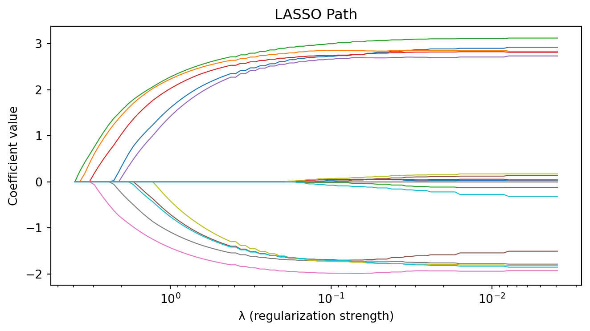

Regularization, Variable Selection, and LLMs in Data Analysis
Invalid Date
A research team fitted ordinary least squares to predict patient outcomes from 500 gene expression features on 80 patients.
The model had memorized noise. With more features than samples, OLS finds a perfect interpolation — not because the biology is that clean, but because there are infinitely many solutions that pass through every data point.
This is the overfitting catastrophe that regularization prevents.
We want to model a response \(y \in \mathbb{R}^n\) as a function of predictors \(X \in \mathbb{R}^{n \times p}\):
\[y = X\beta + \varepsilon, \quad \varepsilon \sim N(0, \sigma^2 I)\]
Add an \(\ell_2\) penalty:
\[\hat{\beta}_{\text{ridge}} = \arg\min_\beta \left\{ \frac{1}{2n}\|y - X\beta\|_2^2 + \frac{\lambda}{2} \|\beta\|_2^2 \right\}\]
Closed-form solution: \(\hat{\beta}_{\text{ridge}} = (X^TX + n\lambda I)^{-1}X^Ty\)
(All three methods—ridge, LASSO, elastic net—use the glmnet convention with \(1/(2n)\) scaling on the loss, so \(\lambda\) is comparable across methods.)
As \(\lambda\) increases:
There exists an optimal \(\lambda\) that minimizes prediction error. The mean squared error:
\[\text{MSE}(\hat{\beta}_{\text{ridge}}) = \text{Bias}^2 + \text{Variance}\]
Ridge is optimal when many predictors have small effects (no true sparsity).
Why does changing \(\|\beta\|_2^2\) to \(\|\beta\|_1\) — changing a sphere to a diamond — cause coefficients to become exactly zero?
The answer is corners.
The \(\ell_1\) constraint set (a diamond / cross-polytope) has corners on every coordinate axis. The \(\ell_2\) constraint set (a sphere) is perfectly smooth.
When the OLS contour ellipse expands until it touches the constraint set, it almost always hits a corner of the diamond — where one or more coordinates are exactly zero.
In \(p\) dimensions: the \(\ell_1\) ball has \(2p\) vertices, all on coordinate axes. High-dimensional geometry makes corner intersections even more likely.
Least Absolute Shrinkage and Selection Operator (Tibshirani, 1996):
\[\hat{\beta}_{\text{lasso}} = \arg\min_\beta \left\{ \frac{1}{2n}\|y - X\beta\|_2^2 + \lambda \|\beta\|_1 \right\}\]
The \(\ell_1\) penalty \(\|\beta\|_1 = \sum_j |\beta_j|\) produces sparse solutions: many \(\hat{\beta}_j = 0\) exactly.
LASSO simultaneously performs estimation and variable selection.
The constraint region for \(\ell_1\) is a diamond (cross-polytope). The constraint for \(\ell_2\) is a sphere.
The OLS solution, projected onto the constraint set, is more likely to hit a corner of the diamond (where coordinates are zero) than the smooth surface of the sphere.
In \(p\) dimensions: the \(\ell_1\) ball has \(2p\) vertices (one per axis), making sparse intersections very likely.
As \(\lambda\) decreases from \(\lambda_{\max}\) (where \(\hat{\beta} = 0\)) to 0:

\(K\)-fold cross-validation:
Compromise between ridge and LASSO (Zou & Hastie, 2005):
\[\hat{\beta}_{\text{enet}} = \arg\min_\beta \left\{ \frac{1}{2n}\|y - X\beta\|_2^2 + \lambda\left[\alpha\|\beta\|_1 + \frac{1-\alpha}{2}\|\beta\|_2^2\right] \right\}\]
When to use elastic net: Correlated predictors (common in genomics). LASSO tends to arbitrarily select one from a group of correlated variables; elastic net selects the group.
| Method | Penalty | Sparsity? | Best when… |
|---|---|---|---|
| Ridge | \(\frac{1}{2}\|\beta\|_2^2\) | No | Many small effects |
| LASSO | \(\|\beta\|_1\) | Yes | Few large effects |
| Elastic Net | \(\alpha\|\beta\|_1 + \frac{1-\alpha}{2}\|\beta\|_2^2\) | Yes | Correlated predictors |
All are available in glmnet (R) and scikit-learn (Python).
Under the irrepresentable condition and sufficient signal strength, LASSO recovers the true support (nonzero coefficients) with probability \(\to 1\) as \(n \to \infty\).
Under restricted eigenvalue conditions, LASSO achieves prediction error:
\[\frac{1}{n}\|X\hat{\beta}_{\text{lasso}} - X\beta^*\|_2^2 = O\left(\frac{s \log p}{n}\right)\]
where \(s\) = number of true nonzero coefficients. This is near-optimal—you pay only \(\log p\), not \(p\).
In 2002, Laura van ’t Veer measured 25,000 genes on 78 breast cancer patients and used a supervised method to find a 70-gene signature predicting metastasis (van ’t Veer et al., 2002, Nature).
The signature was commercialized as MammaPrint, cleared by the FDA, and validated in the MINDACT trial (Cardoso et al., 2016, NEJM): 6,693 patients. Women classified as high clinical risk but low genomic risk were randomized to chemotherapy vs. no chemotherapy.
Result: 94.7% five-year distant metastasis-free survival without chemo. 46% of women who would have received chemotherapy were spared — because a model built on 25,000 variables and 78 patients turned out to be right.
At Duke University, Anil Potti used gene expression signatures to predict which chemotherapy drug a tumor would respond to. Clinical trials enrolled patients based on these signatures.
Two statisticians at MD Anderson — Keith Baggerly and Kevin Coombes — spent years trying to reproduce the analysis (Baggerly & Coombes, 2009, Ann. Appl. Stat.). They found mislabeled samples, off-by-one errors in gene indices, and results that were literally the opposite of what was claimed.
18 papers retracted. Potti’s medical license revoked. Patients had been assigned to treatments based on fraudulent models.
MammaPrint and the Duke fraud used the same method on the same kind of data for the same kind of question. The difference:
The lesson: Regularization is a tool, not a guarantee. The model is only as good as the analysis pipeline.
Even when the method is applied honestly, LASSO has a reproducibility challenge:
When predictors are correlated (as genes always are), LASSO arbitrarily picks one from each correlated group. Different samples → different arbitrary picks → different gene lists, same prediction accuracy.
This is why bootstrap stability analysis matters: it tells you which genes are consistently selected, not just selected once. Elastic net mitigates this via the grouping property.
Large language models (Claude, ChatGPT, and others) can now write and debug analysis code, explain statistical output, suggest analysis strategies, and provide first-pass biological interpretations.
They are useful for code generation, syntax lookup, and boilerplate. They are unreliable for statistical judgment, numerical computation, and novel biological claims. Code may contain subtle bugs; gene function descriptions may be fabricated.
| Error | Why it matters | How you catch it |
|---|---|---|
| No multiple testing correction | Hundreds of false positives | Check for p.adjust() or equivalent |
| Uses theoretical null when empirical null is needed | Inflated false discovery rate | Look at the \(z\)-score histogram |
| Runs t-SNE on raw 20K dimensions | Slow, noisy, misleading | Check if PCA was applied first |
Doesn’t set scale. = TRUE in PCA |
Variables on different scales dominate | Read the code carefully |
Uses lambda.min without justification |
Overly complex model | Is the sparser lambda.1se model adequate? |
| Hallucinated gene functions | Wrong biological conclusions | Verify against GeneCards, NCBI Gene, PubMed |
After identifying a gene set, you might ask an AI to describe their functions. Always cross-reference the response:
. . .
For \(n \leq\) a few hundred (typical in many BTP settings), penalized regression and empirical Bayes methods often perform comparably or better, and are much more interpretable.
The complete high-dimensional analysis toolkit:
| Day | Topic | Key Idea |
|---|---|---|
| 1 | Multiple testing & FDR | Control false discoveries when testing thousands of hypotheses |
| 1 | Empirical Bayes | Use the aggregate data to estimate prior, then individualize |
| 2 | PCA & UMAP | Find low-dimensional structure; visualize |
| 2 | Penalized regression | Predict and select variables when \(p \gg n\) |
| 2 | LLMs as tools | Accelerate coding and interpretation; verify everything |
Take a few minutes on each of these before we move to the lab.
You have \(n = 80\) samples and \(p = 5{,}000\) gene expression measurements. Why can’t you just run ordinary least squares?
. . .
Ridge regression minimizes \(\frac{1}{2n}\|y - X\beta\|_2^2 + \frac{\lambda}{2}\|\beta\|_2^2\).
Discuss: What happens to \(\hat{\beta}_{\text{ridge}}\) as \(\lambda \to 0\)? As \(\lambda \to \infty\)?
. . .
Discuss: Explain geometrically why the \(\ell_1\) penalty gives exactly sparse solutions but the \(\ell_2\) penalty does not.
. . .
The \(\ell_1\) constraint set is a diamond (corners on the axes). The \(\ell_2\) constraint set is a sphere (smooth, no corners). The OLS contours typically hit the diamond at a corner, where one or more coordinates are exactly zero. The sphere has no corners to hit.
In \(p\) dimensions: the \(\ell_1\) ball has \(2p\) vertices, all on coordinate axes. High-dimensional geometry makes corner intersections even more likely.
Cross-validation gives \(\lambda_{\min}\) (45 genes) and \(\lambda_{1\text{se}}\) (12 genes). You’re writing a paper to identify a gene signature.
Discuss: Which do you report?
. . .
\(\lambda_{1\text{se}}\). Its prediction error is statistically indistinguishable from \(\lambda_{\min}\), but the model is much sparser. A 12-gene signature is more interpretable, more reproducible, and more practical for a diagnostic panel than a 45-gene signature.
Lab 4: Penalized regression on the Golub dataset with biological interpretation.
High-Dimensional Data Analysis Workshop | BTP